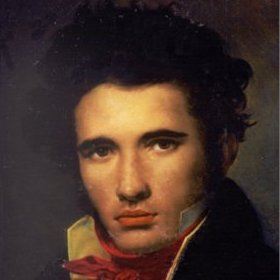
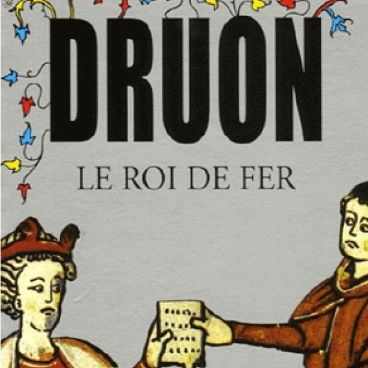

|
Bettina Boon FalleurProgrammerSi le chat a la queue verticale, c’est qu’il est en confiance. C’est notre œil, notre regard, qui nous dicte notre façon d’agir par rapport aux autres. Mais on peut être myope. |
My Favorite Novels
 |
Les Mains du MiracleThe fictionalised biography of the Finnish doctor Felix Kernsten, specialised in therapeutical massages who treated Himmler during WWII and savec uncountable number of lifes. |
|  |
Le Comte de Monte CristoOn the day of his wedding to Mercédès, Edmond Dantès, first mate of the Pharaon, is falsely accused of treason, arrested, and imprisoned without trial in the Château d'If, a grim island fortress off Marseilles. A fellow prisoner, Abbé Faria, correctly deduces that his jealous rival Fernand Mondego, envious crewmate Danglars, and double-dealing Magistrate De Villefort framed him. Faria inspires his escape and guides him to a fortune in treasure. As the powerful and mysterious Count of Monte Cristo (Italy), he arrives from the Orient to enter the fashionable Parisian world of the 1830s and avenge himself on the men who conspired to destroy him. |
The Guernsey Literary ands Potato Peel Pie SocietyIt's 1946 and author Juliet Ashton can't think what to write next. Out of the blue, she receives a letter from Dawsey Adams of Guernsey - by chance, he's acquired a book that once belonged to her - and, spurred on by their mutual love of reading, they begin a correspondence. When Dawsey reveals that he is a member of the Guernsey Literary and Potato Peel Pie Society, her curiosity is piqued and it's not long before she begins to hear from other members. As letters fly back and forth with stories of life in Guernsey under the German Occupation, Juliet soon realizes that the society is every bit as extraordinary as its name |
|
|  |
Les Rois MauditsSet during the reigns of the last five kings of the Capetian dynasty and the first two kings of the House of Valois, the series begins as the French King Philip the Fair, already surrounded by scandal and intrigue, brings a curse upon his family when he persecutes the Knights Templar. The succession of monarchs that follows leads France and England to the Hundred Years' War. |